Project Summary
Since the split we started our game from scratch.
So we began with reimplementing what we already had before (see weekly reports)
Then the idea was to create a kind of rogue-like platform survival game but first we had to finish some more basics we had not done yet
Tiles
Since we did not yet do any work on visuals we started with creating three basic tiles
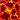 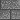 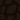
and created a map editor for editing the underlying csv files ingame

How to save/load the background and render it?
we used a 2dimensional list which countains all tileindexes, to save/load this list we use a csv-file
based on the index of a tile we draw a tile at the given position of the tile on the screen so we render the background.
Main Manu
....
Custom Background
We imlemented a map editor for editing the underlying csv files ingame
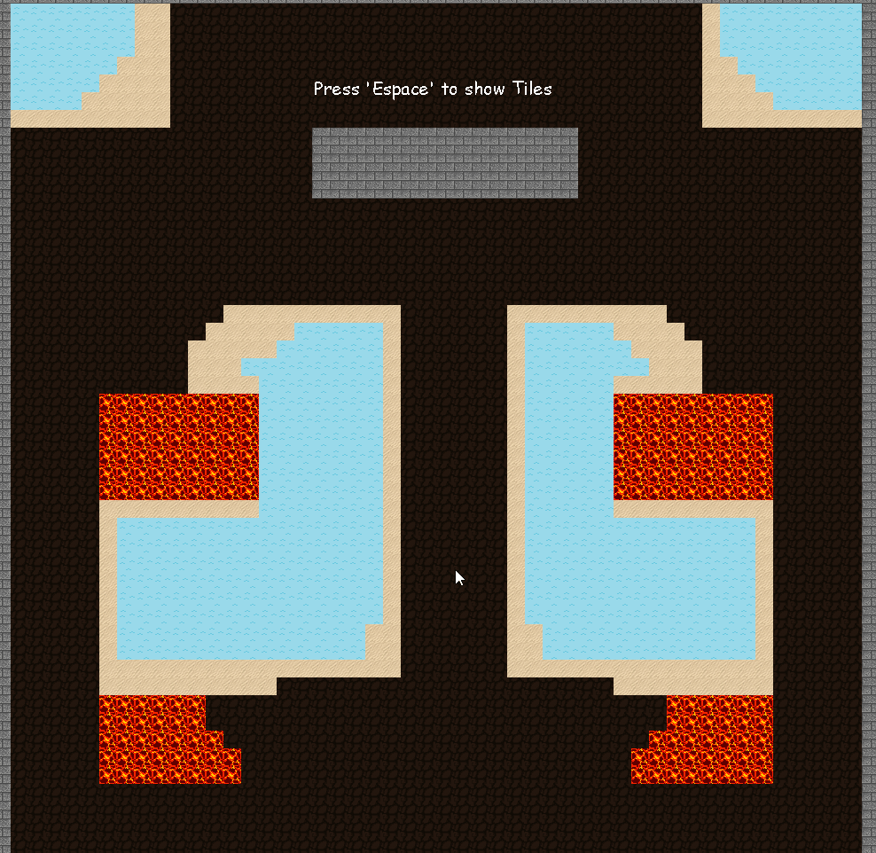
Collision
How do we check for the collisions?
To do the collisions we have to create masks of all surfaces which we want to check the collision from
Tile Masks
To create a Mask for a tile, we need to create a transparent screen for each tile then we can place
the tile on this transparent screen. After that we have to create a new suface of this screen, since we have this
surface we can build a mask of it. when we build a mask, we give each pixel of this surface a 0,1 value, any traparent
pixel will get 0 and the rest would get the 1.
Robot Mask
To build a mask for the robot or projectile we just need to build the mask
from its surface.
Collision Check
To check for the collision we can check if there is an overlap between
none transparent pixel of two masks. We can also check for the area of the collision so we know how many bits
are colliding.
Sea
We check a area for the collision of the robot with the sea, so when we the whole body of the robot is in the sea, the
the flag for collision will be set
To have a other surface since the robot is under water we have to create a mask between the collision of masks of the robot and the sea
we we have collision we draw this surface on the robot so it seems like the robot is under water.
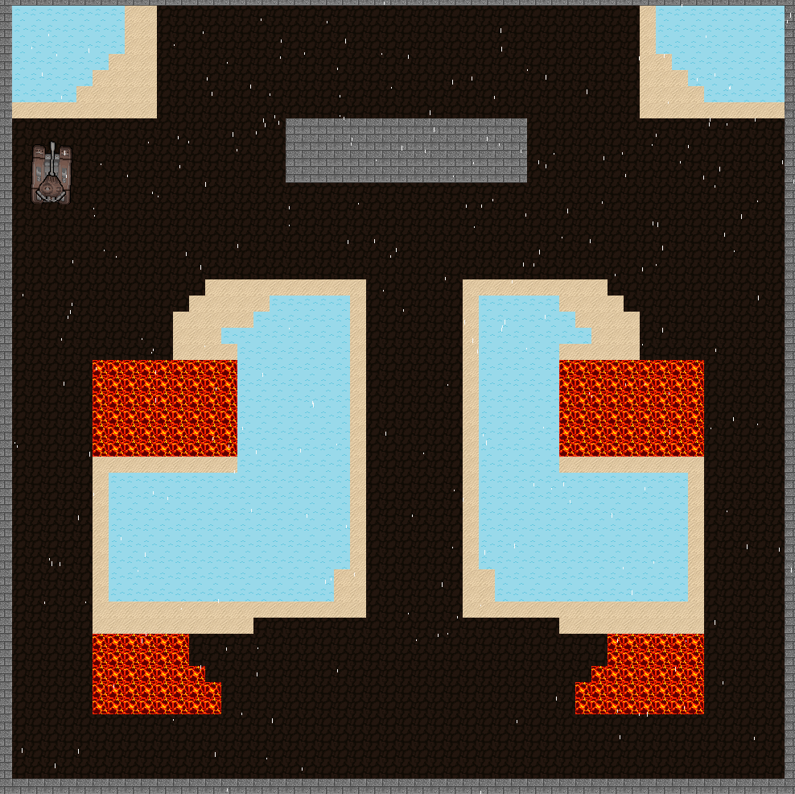
Lava
we check a area for the collision of the robot with the lava, if we have a collision with 200 set bits, the robot would be slower
if the robot is complately in the lava it would be more slower.
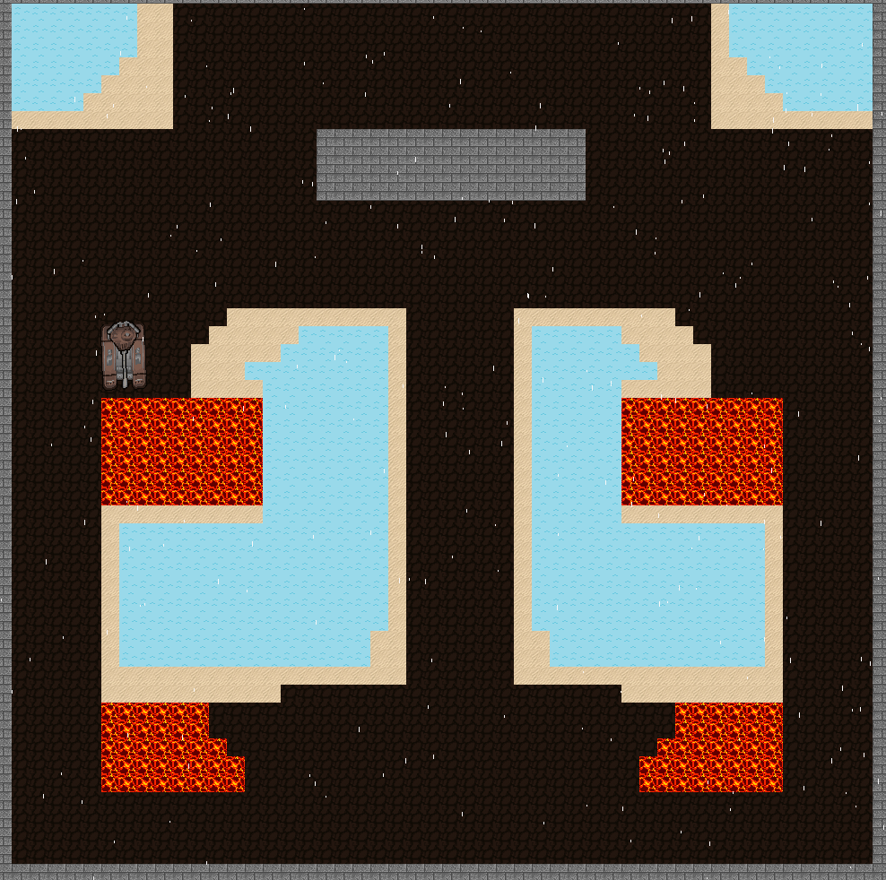
Wall
the check of the collision between a wall mask and the robot is more complicated because we want to implement a realistic collision.
To do that we have to know exactly which corner of the robot is colliding with the wall. So we create 4 surfaces of the 4 corner and build
masks of it.
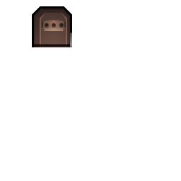
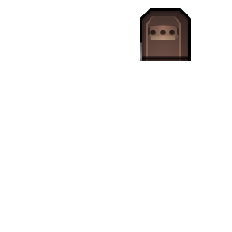
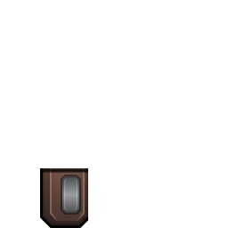
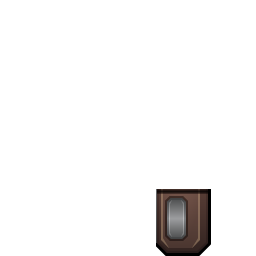
now we just have to know where the wall is and what the current angle is so we can create a realistic collision.

Better movement and collision
We smoothed out the movement motions and added collision detection.
Depending on the material of the tile the player collides with they are either slowed or bounced back
(which is minimal for stone but expandable for different materials in the future)

 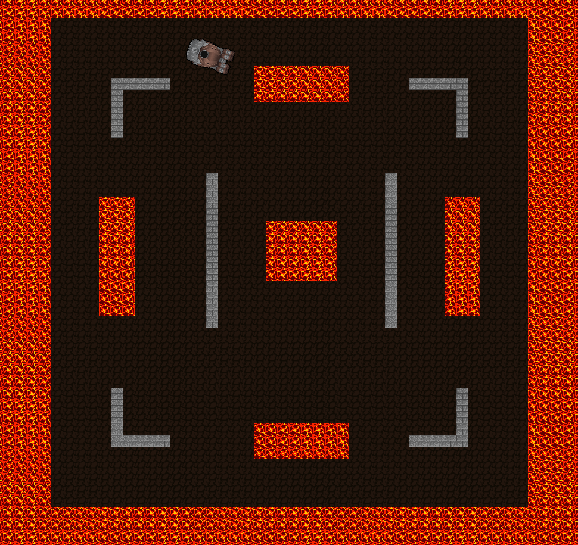
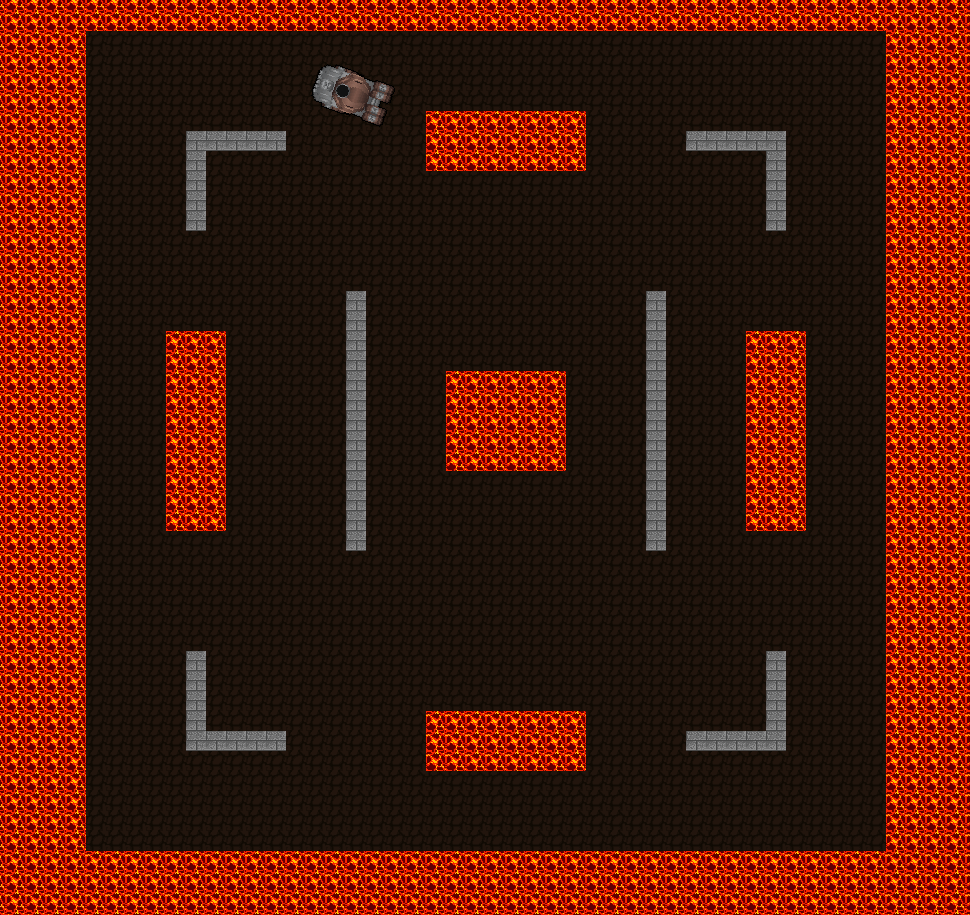
Enemies
Right now there is a static robot which shoots periodically
and a patroling robot which stops and shoots if it detects the player in front of it
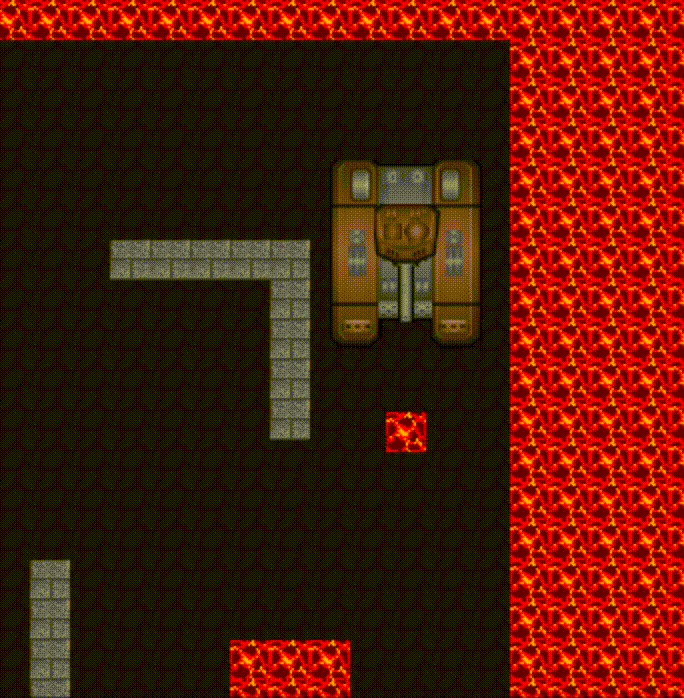

Possible Outlook
- More 'intelligent' enemies, e.g. bosses
- More diverse levels with higher difficulties
- Scoreboard or story progression
- Custom images/animations for different robots and projectiles
- Add collectable items
- Local multiplayer
{kind=link}